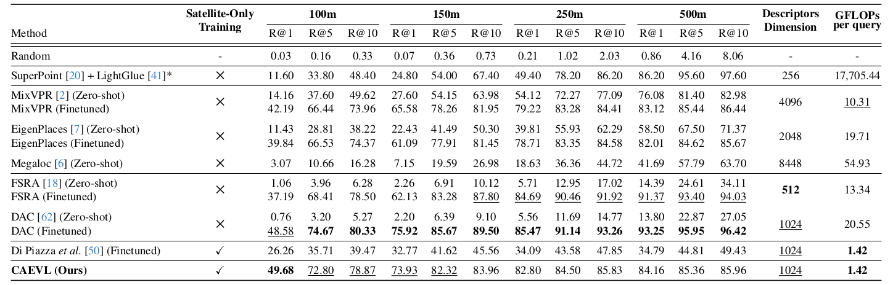

Beyond Paired Data: Self-Supervised UAV Geo-Localization from Reference Imagery Alone
TL;DR
A data-efficient UAV geolocalization method trained without paired UAV–satellite images, using edge-based representations and non-contrastive learning for robust cross-altitude visual localization.
Overview of CAEVL. All input images are first processed through a Canny filter to extract the edges. An autoencoder is trained using a pixel-wise L2 loss and a perceptual loss. The decoder is then discarded and the encoder is fine-tuned using a non-contrastive approach. Two views of the same input image are passed through the encoder to produce both local features (feature maps before pooling) and global features (embeddings after pooling). The local features are fed to a local projection head to project them to a smaller space. Two sets of matches are computed: one using the spatial information from each view, and the other based on the L2-distance in the embedding space. The VICReg criterion is then applied to these matched spatial embeddings. Furthermore, the global features are passed into a global projection head to produce global embeddings. The VICReg criterion is applied on these global embeddings. After training, the local and global projection heads are discarded. The encoder is kept to compute embeddings of UAV and reference images, that will be compared using the cosine similarity.
Abstract
Image-based localization in GNSS-denied environments is critical for UAV autonomy. Existing state-of-the-art approaches rely on matching UAV images to geo-referenced satellite images; however, they typically require large-scale, paired UAV–satellite datasets for training. Such data are costly to acquire and often unavailable, limiting their applicability. To address this challenge, we adopt a training paradigm that removes the need for UAV imagery during training by learning directly from satellite-view reference images. This is achieved through a dedicated augmentation strategy that simulates the visual domain shift between satellite and real-world UAV views. We introduce CAEVL, an efficient model designed to exploit this paradigm, and validate it on ViLD, a new and challenging dataset of real-world UAV images that we release to the community. Our method achieves competitive performance compared to approaches trained with paired data, demonstrating its effectiveness and strong generalization capabilities.
Results Overview
Comparison of Recall@K performance for various methods at different localization thresholds (100m, 150m, 250m, and 500m) on the ViLD dataset. Each method’s descriptor dimension and computational cost (GFLOPs) per image query are also reported. Bold values indicate the best in each column, while underlined values represent the second best.
 ViLD Dataset
ViLD Dataset
A challenging UAV localization dataset with real-world flight imagery and high-resolution georeferenced satellite maps.
📦 Overview
The ViLD dataset (Visual Localization Dataset) is a new benchmark designed for evaluating UAV-to-satellite image retrieval in GNSS-denied environments. It contains real UAV images captured from high altitudes under challenging conditions including motion blur, low-light, camera noise, distortions, and imperfect attitude stabilization.
📊 Examples
UAV image (left) ; Corresponding satellite image (right)
UAV image (left) ; Corresponding satellite image (right)

UAV image (left) ; Corresponding satellite image (right)
UAV image (left) ; Corresponding satellite image (right)
BibTeX
@article{amadei2026caevl,
title={Beyond Paired Data: Self-Supervised UAV Geo-Localization from Reference Imagery Alone},
author={Amadei, Tristan and Meinhardt-Llopis, Enric and Bascle, Benedicte and Abgrall, Corentin and Facciolo, Gabriele},
journal={2026 IEEE/CVF Winter Conference on Applications of Computer Vision (WACV)},
year={2026},
organization={IEEE}
}